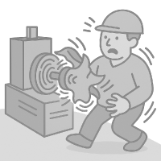
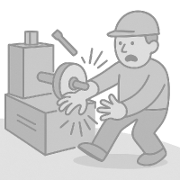
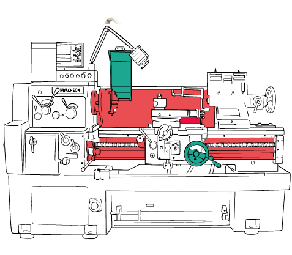
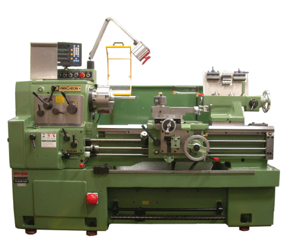

TORNIO MANUALE


Macchina utensile, ad asportazione di truciolo, nella quale il movimento principale è la rotazione del pezzo rispetto all’utensile.
Il pezzo da lavorare viene bloccato nel mandrino o autocentrante e fatto ruotare con esso a velocità predeterminata.
RISCHI
I tre rischi principali e il loro livello di rischio
-
ALTO
-
MEDIO
-
BASSO
-

impigliamento degli indumenti nel mandrino rotante con conseguente trascinamento nella rotazione
-

proiezione del materiale in lavorazione per effetto della forza centrifuga
-

schiacciamento degli arti con il mandrino durante le sua sostituzione
DISPOSITIVI DI PROTEZIONE
Clicca per visuallizare nel dettaglio

